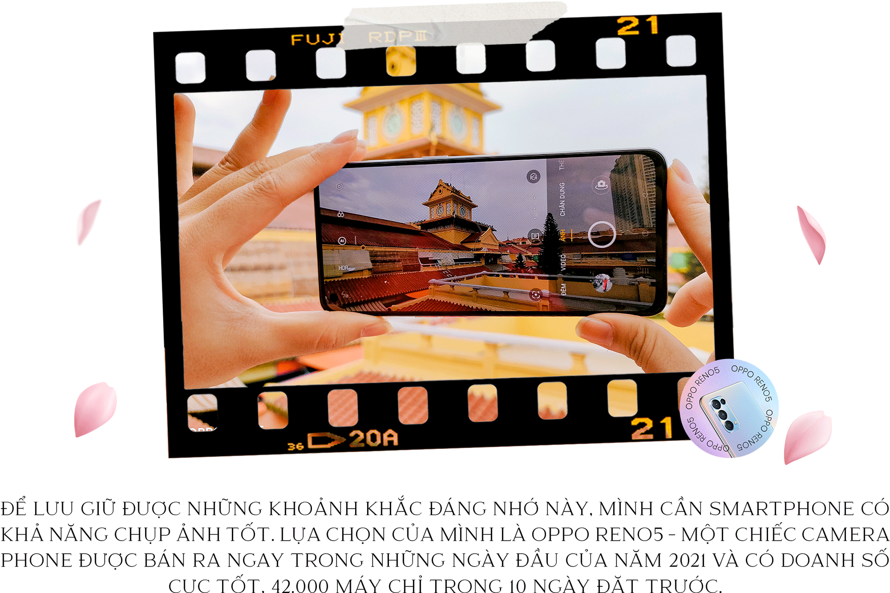
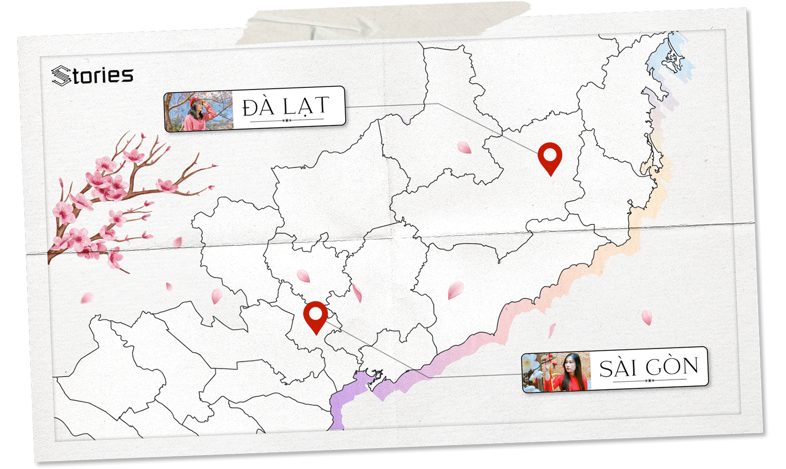
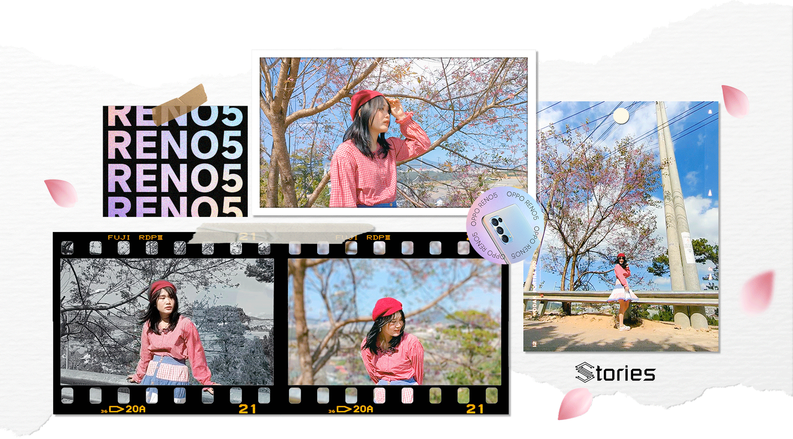
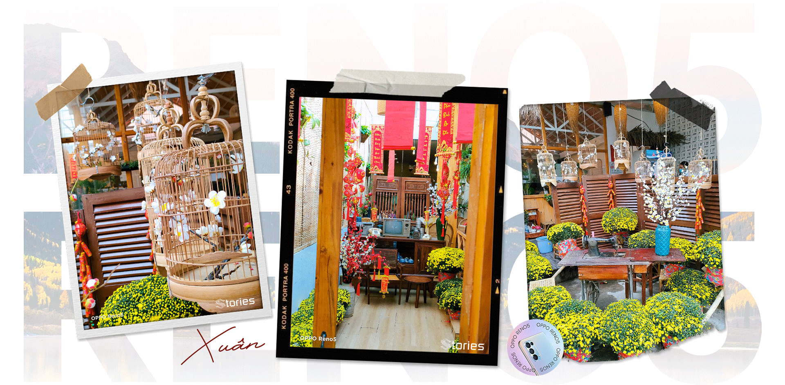
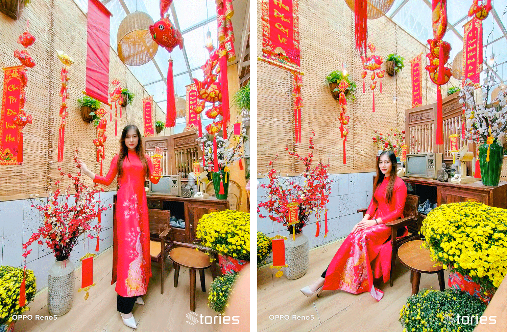
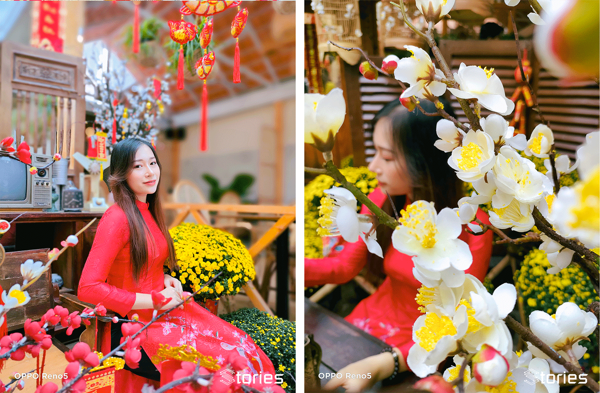
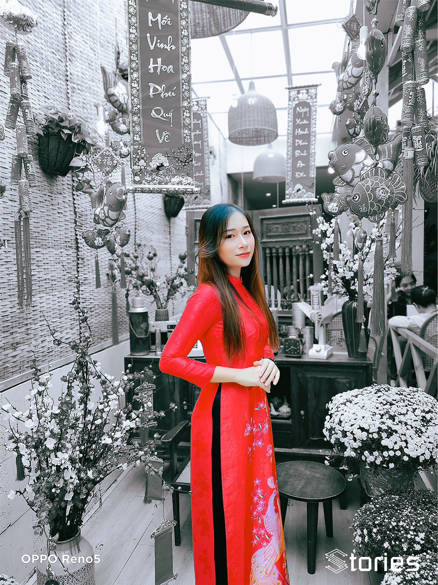
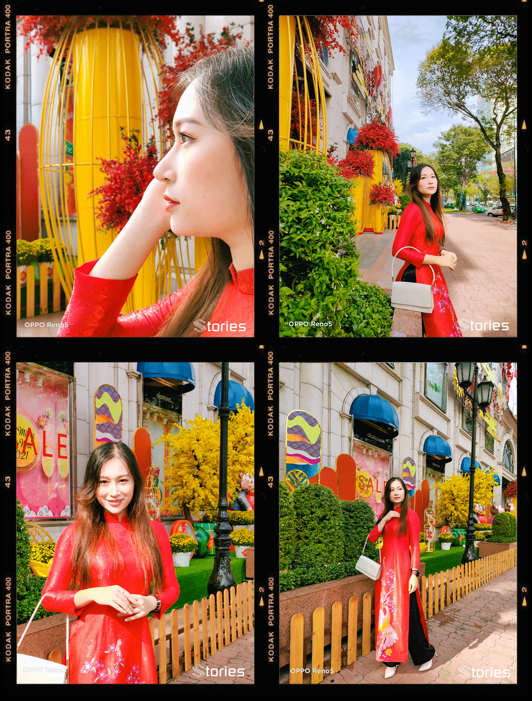
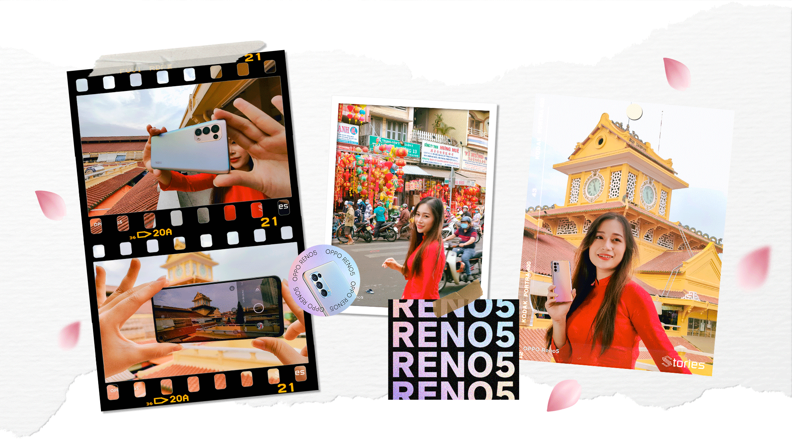
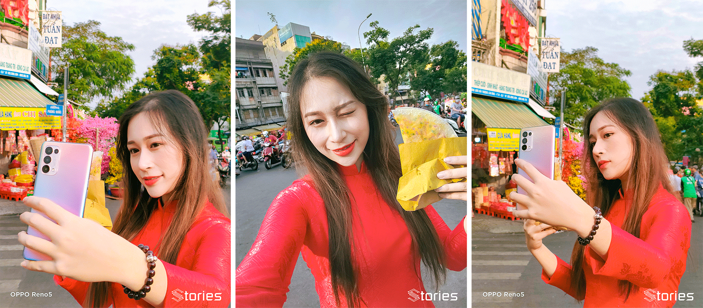

Năm 2020, năm đầy biến động của cả thế giới nói chung và đất nước Việt Nam ta nói riêng vì phải gồng mình chống đại dịch Covid-19, chưa kể thiên tai, mưa lũ triền miên tại ''khúc ruột'' miền Trung. Nhưng nhờ những hành động quyết liệt của Chính phủ và sự đồng lòng của toàn dân đã giúp cả nước vượt qua những ngày tháng khó khăn này.
Những ngày này chính là thời điểm chuyển giao với bao mong ước về một năm tốt đẹp hơn. Rồi cũng sắp sửa đến Tết Nguyên Đán, dịp lễ quan trọng nhất năm mà người Việt nào cũng mong chờ. Rộn ràng trong lòng vậy đấy, thế nên mình cũng muốn rủ ngay bạn bè đi du lịch đâu đó thật xa, cùng chào đón những dấu hiệu đầu tiên của mùa xuân.

OPPO giới thiệu rất nhiều về camera của thế hệ Reno mới nhất, từ những cải tiến thông số phần cứng cho đến các tính năng quay chụp cực ấn tượng. Đọc và nghe những thông tin này làm mình cực kỳ tò mò và hào hứng khám phá. Nếu muốn biết Reno5 chụp ảnh xịn đến mức nào,các bạn hãy cùng mình chìm đắm trong mùa xuân Đà Lạt thông qua ống kính Reno5!

Đà Lạt - thành phố ngàn hoa, điểm du lịch đã quá quen thuộc của giới trẻ hiện nay nhờ có thời tiết ôn hòa mát dịu, cùng những địa điểm chụp hình sống ảo cực chất.
Tết đến cũng là thời điểm hoa anh đào bắt đầu nở rộ, phủ đầy sắc hồng trên khắp thành phố này. Và không thể nào bỏ lỡ, mình đã nhanh tay sử dụng Reno5 để bắt trọn những khoảnh khắc tuyệt vời này vì nghe đồn các bộ lọc màu OPPO đỉnh lắm!
Sau một hồi tích cực tác nghiệp, thử hàng loạt tính năng cùng những bộ lọc thì mình đã có một bộ ảnh tuyệt đẹp tại Đà Lạt, mời các bạn cùng xem.

Mình cảm thấy OPPO rất hiểu người dùng trẻ, đoán biết giới trẻ tụi mình cần những tính năng gì trên smartphone của hãng, cụ thể là chiếc OPPO Reno5 mình đang dùng.
Hầu như các công cụ, chế độ mình cần để tạo ra một bức ảnh đẹp đều có sẵn trong máy, từ xóa phông, góc rộng, macro,... và dĩ nhiên là cả tính năng làm đẹp AI chưa bao giờ làm người dùng thất vọng.
Mình đã tiết kiệm được rất nhiều thời gian. Thay vì chụp xong phải chỉnh màu sao cho đẹp, sao cho ảo diệu... thì thời gian đó, mình dành để ngắm quang cảnh Đà Lạt mộng mơ nhưng vẫn có ảnh đẹp để sống ảo và khoe với bạn bè.
Cái mình ấn tượng nhất trong chuyến đi Đà Lạt này tất nhiên là cảnh đẹp nên thơ, nhưng chỉ ngắm hoặc chụp ảnh thôi thì sao lưu giữ hết được vẻ đẹp được. Vậy là mình phải tiếp tục phải nhờ đến OPPO Reno5 với loạt chế độ video đỉnh cao.
Như bạn có thể thấy trong video mình để dưới đây, từ quay chân dung đến khi thêm các filter lọc màu thì OPPO Reno5 xử lý rất tốt, chủ thể là bạn nữ áo hồng này rất nổi bật giữa khung hình trắng đen.
Đặc biệt là chế độ quay video hiển thị kép quá xịn sò, giúp các bạn trẻ muốn làm các video vlog ngắn có thể đăng được ngay, chẳng cần phải hậu kỳ phức tạp. Nhìn vào đây thì có ai nghĩ là quay từ một chiếc smartphone đâu chứ!
Đáng tiếc là mình chỉ đi một ngày nên không có nhiều thời gian để đi nhiều địa điểm tại Đà Lạt, nhưng qua bộ ảnh trên, chắc bạn cũng có thể thấy vẻ đẹp tuyệt với của thành phố này như thế nào khi qua ống kính trên OPPO Reno5. Đúng là cảnh đẹp nhưng phải có máy chụp đẹp nữa thì mới hoàn hảo!
Nếu đơn giản không đi du lịch, chỉ dạo quanh Sài Gòn thôi thì sao? Cùng mình đi tiếp xem camera trên OPPO Reno5 thể hiện như thế nào nhé.
Địa điểm mình chọn la cà, chụp ảnh là ở các hàng quán cà phê ở Sài Gòn. Với tiết trời thành phố mấy hôm nay đã bắt đầu se se lạnh, báo hiệu mùa Xuân sắp về thì thưởng thức một ly cacao nóng, ngồi chill cùng với đám bạn thì không còn gì sướng bằng.
Bộ ảnh chụp bằng OPPO Reno5 dưới đây có một phong cách rất Sài Gò', nhưng vẫn mang một không khí Tết miền quê rất đậm nét. Đặc biệt là cửa hàng đã chuẩn bị rất nhiều vật trang trí, góc sống ảo cực độc đang chờ bạn khám phá.

Các bức ảnh này chụp trong nhà, xen lẫn với ánh sáng ngoài trời phức tạp nhưng OPPO vẫn có thể xử lý được tốt. Chi tiết lên đầy đủ và đặc biệt là màu sắc lên rất tươi tắn, thể hiện đúng tinh thần ngày tết cổ truyền.
Được trang bị nhiều ống kính nên Reno5 có thể cho bạn khả năng linh động trong nhiều bối cảnh.
Ví dụ mình muốn lấy toàn cảnh tiệm cà phê này luôn, nhưng nếu lùi quá sâu sẽ dễ bị vướng do không gian cũng khá hẹp, đây sẽ là lúc ống kính góc siêu rộng trở nên cực kỳ hữu dụng.

Hoặc đến với chế độ chân dung xóa phông, có lẽ được sử dụng nhiều nhất chỉ sau chế độ chụp tự động (Auto). Reno5 có cảm biến đo khoảng cách riêng, giúp ảnh cho ra xóa phông khá chuẩn xác, ít bị lẹm vào chủ thể.

Cuối cùng là các tấm ảnh có áp dụng bộ lọc màu AI, máy sẽ tự nhận diện khung cảnh xung quanh có những thuật toán xử lý để cho ra các bức ảnh đẹp nhất, như các tấm hình trên ta thấy sắc đỏ hiện lên rất nổi bật.

Xuân về thì không thể nào bỏ qua Diamond Plaza, nơi đây đã bắt đầu trang trí tràn ngập không khí Tết Tân Sửu sắp đến. Với cảnh đẹp thế này cùng quang cảnh tươi sáng, không thể nào làm khó được camera OPPO Reno5.

Hình ảnh chụp tại đây thể hiện màu sắc rực rỡ, sắc nét. Nói thật là bạn chỉ cần đưa máy lên và bấm chụp, còn lại cứ để Reno5 lo, không cần phải tốn nhiều công sức để có một bức ảnh để sống ảo.
Từ xoá phông, góc rộng, cận cảnh... camera của máy đều có thể "cân" tất. Mà nói thôi thì sao được, mời bạn kiểm chứng trong bộ ảnh dưới đây.
Dọc theo Quận 1 về Quận 6, cũng là con đường mình đi làm hằng ngày, bạn sẽ không khó để bắt gặp khu phố người Hoa nằm ở đầu đường Hải Thượng Lãn Ông. Ở đây là tập hợp các cửa hiệu bán đồ trang trí trên cả một dãy phố dài, vì bán cùng một loại sản phẩm nên rất có dấu ấn riêng khi sắp diễn ra một dịp lễ lớn nào đó.
Đây là nơi các bạn trẻ thường xuyên lui tới để đi dạo, chụp hình, cũng là nơi chốn lý tưởng thường xuất hiện trên những bộ phim.
Sắc xuân đang dần hiện lên rõ nét hơn khi con đường này giờ đây đã ngập trong sắc đỏ của đèn lồng và câu đối, sắc hồng của hoa đào, vàng của hoa mai,... Đặc biệt, khung cảnh còn được thể hiện tuyệt với hơn qua các bộ lọc trên Reno5.

Và không thể thiếu những thước video ngắn, được quay bằng các chế độ camera mới lạ và độc đáo của Reno5:
Video phơi sáng kép cực độc đáo trên Reno5
Video phơi sáng kép cực độc đáo trên Reno5
Ảnh selfie thì gọi là siêu siêu đỉnh:

Kết thúc một ngày cùng OPPO Reno5 rong ruổi Sài Gòn, chợt nhận ra Sài Gòn vẫn rất đẹp như ngày nào. Đó cũng là tín hiệu đáng mừng vì mọi sinh hoạt của người dân Việt Nam đã quay trở lại đúng quỹ đạo.
Mọi người đã có thể nghỉ ngơi, vui chơi sau một năm 2020 đầy mệt mỏi. Cùng chào đón 2021 với một tinh thần lạc quan nhất có thể.